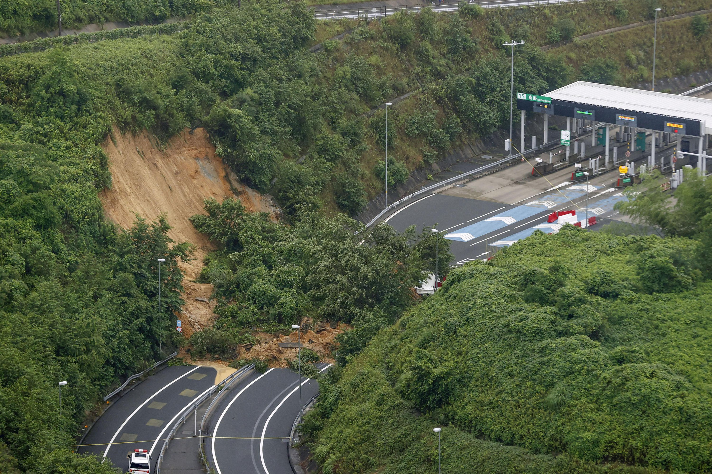
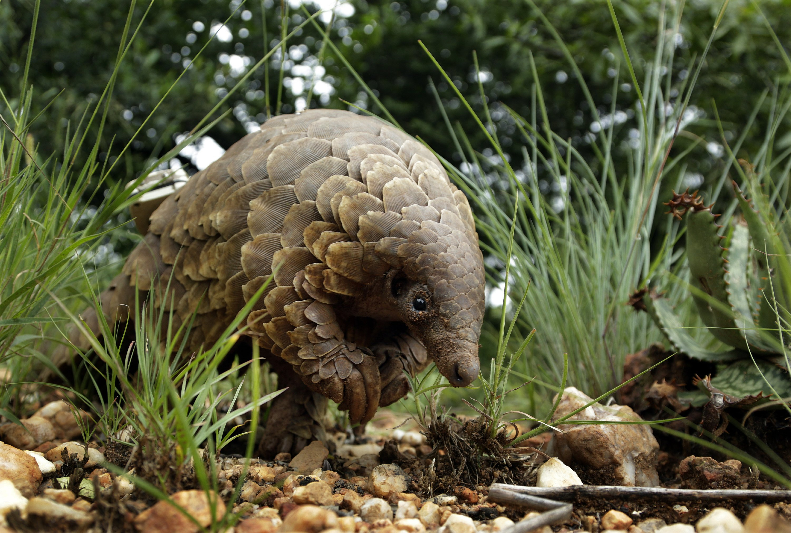
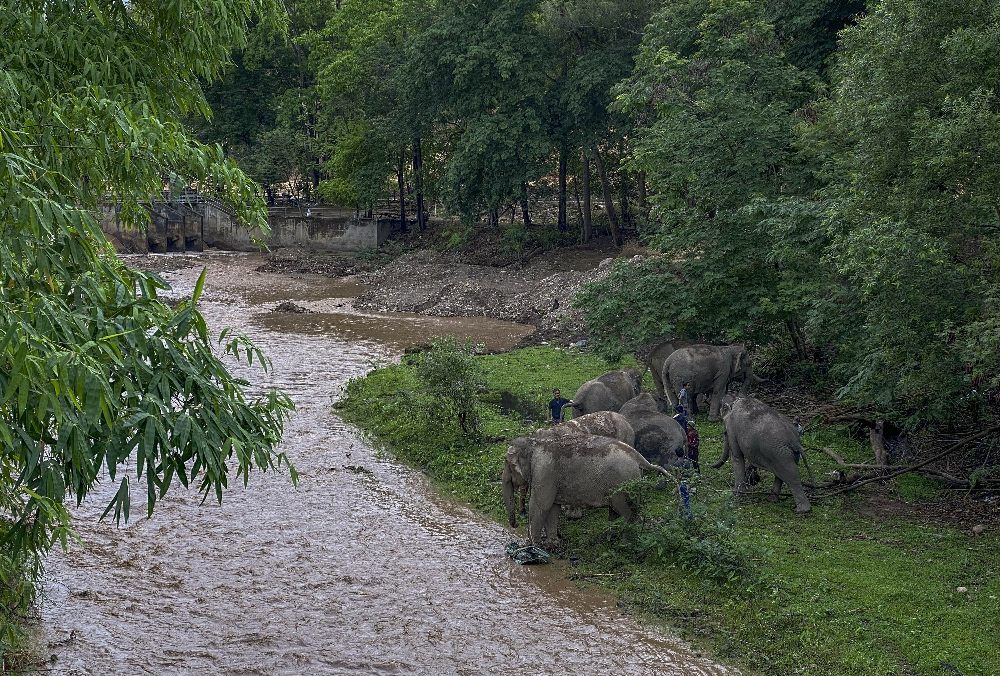
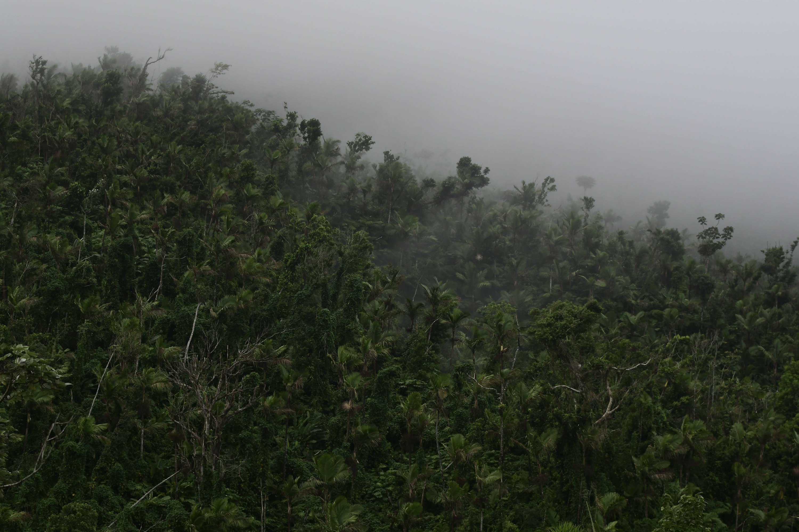
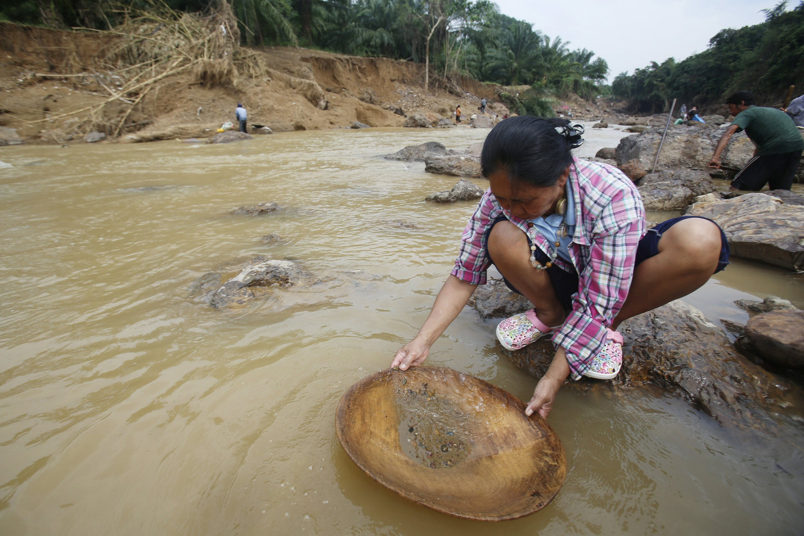
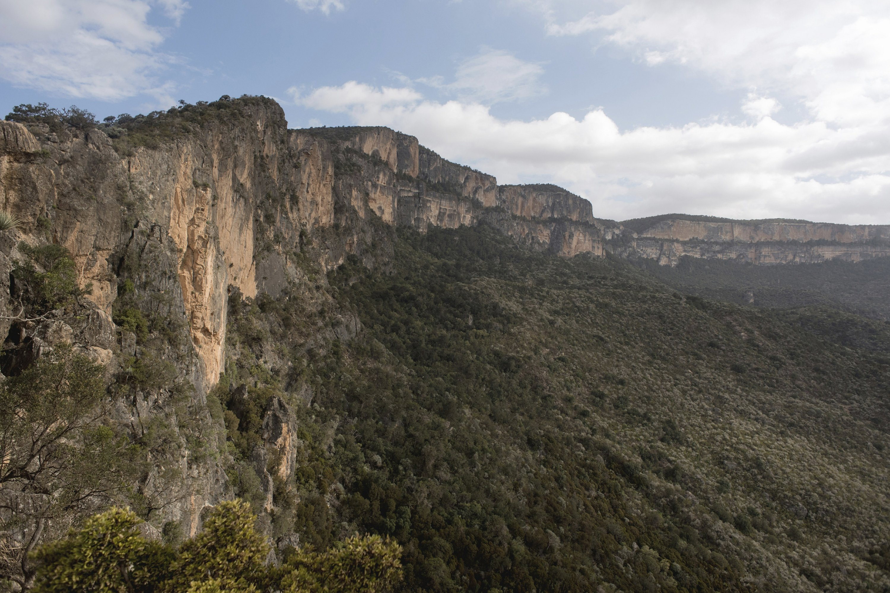
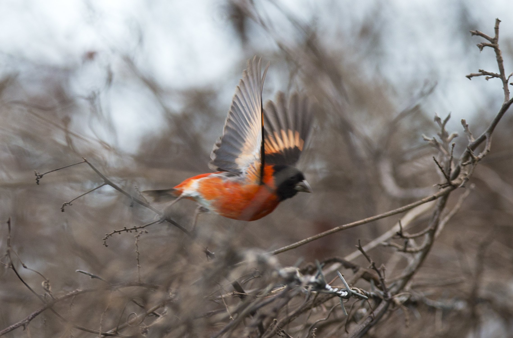
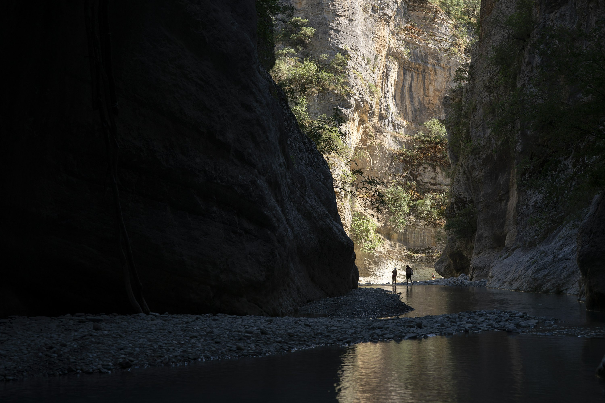
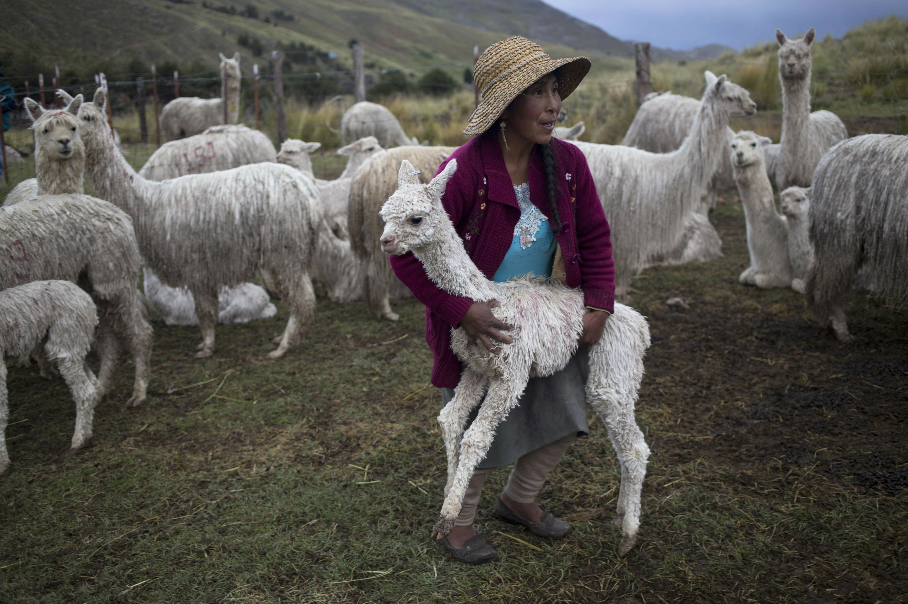
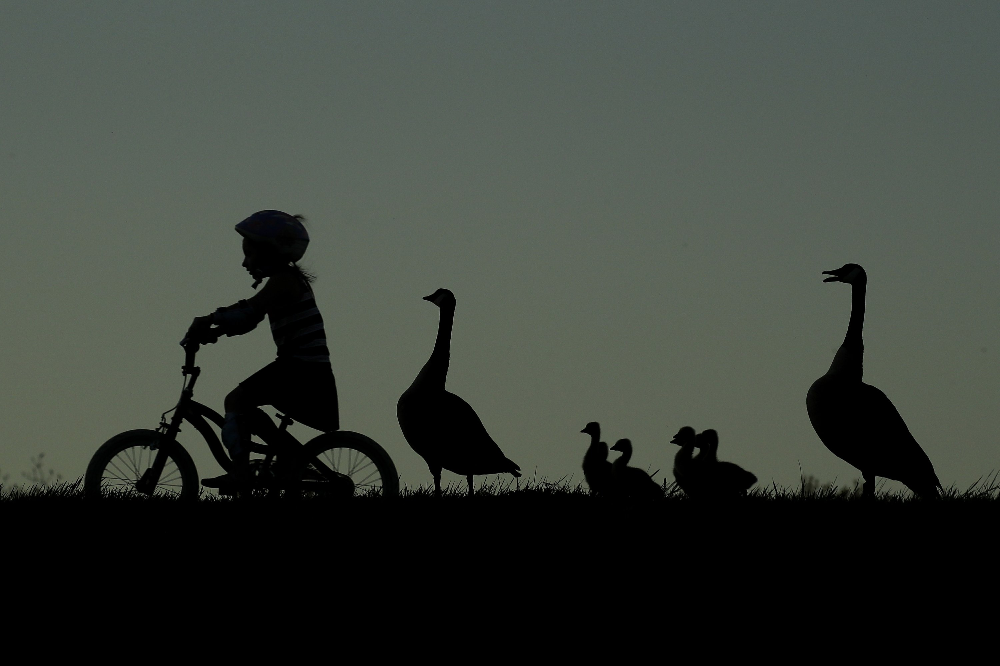

Content

(1) A landslide is seen near an exit of a highway in Kyoto, western Japan Thursday, July 9, 2020. Pounding rain spread to central Japan and triggered mudslides. (Kyodo News)

(2) FILE - In this Feb. 15, 2019 file photo, a pangolin looks for food on private property in Johannesburg, South Africa. Often caught in parts of Africa and Asia, the anteater-like animals are smuggled mostly to Southeast Asia, where their scales are used in traditional medicine. In April 2020, the Wildlife Justice Commission reported traders were stockpiling pangolin scales in several Southeast Asia countries awaiting an end to the pandemic. (Themba Hadebe)

(3) In this Saturday, May 2, 2020, photo provided by Save Elephant Foundation, a herd of 11 elephants take a rest on the shore of a river during a 150-kilometer (93 mile) journey from Mae Wang to Ban Huay in northern Thailand. Save Elephant Foundation are helping elephants who have lost their jobs at sanctuary parks due to the lack of tourists from the coronavirus pandemic to return home to their natural habitats.. (Save Elephant Foundation)
(4) Actress Katerina Lehou playing the role of high priestess lights an Olympic torch during a handover ceremony for the Olympic Flame at Panathenaic stadium in Athens, on Tuesday, Oct. 31, 2017. The South Korean leg of the relay will involve 7,500 torch-bearers, who will cover a total 2,018 kilometers (about 1260 miles) before the opening ceremony in Pyeongchang, which will host the Feb. 9-25, 2018 Winter Olympics. (Petros Giannakouris)

(5) This Nov. 6, 2018 photo shows part of a forest canopy near the Iguaca Aviary, in El Yunque, Puerto Rico. Federal and local scientists will meet next month to debate how best to revive a species of Puerto Rican parrots that numbered more than 1 million in the 1800s but dwindled to 13 birds during the 1970s after decades of forest clearing. (Carlos Giusti)

(6) In this Jan. 19, 2017, photo, locals pan for gold in the Klong Thong, or "Golden Canal " in Prachuap Khiri Khan province, southern Thailand. The canal, expanded by devastating flash floods, has been washing up gold for villagers whose businesses have been swept away. (Sakchai Lalit)

(7) This Thursday Aug. 4, 2016 shows cliffs near Daalo in the Cal Madow mountains in Somaliland, a breakaway region of Somalia. The last wild frankincense forests on Earth are under threat as prices rise with the global appetite for essential oils. Overharvesting has trees dying off faster than they can replenish, putting the ancient resin trade at risk. (Jason Patinkin)

(8) In this Oct. 24, 2018 photo, a Venezuelan male red siskin takes flight in Vargas, Venezuela. The finch-like red siskin is vanishing from the wild at an alarming rate, falling prey to a century of shrinking forests and poachers cashing in on their brilliant red feathers, prized around the world by breeders of exotic birds. (Fernando Llano)

(9) In this June 20, 2019 photo, people walk along the Langarica River, a tributary to the Vjosa near Permet, Albania. Albania's government has set in motion plans to dam the Vjosa and its tributaries to generate much-needed electricity for one of Europe's poorest countries, with the intent to build eight dams along the main river. (Felipe Dana)
(10) 2017 AP YEAR END PHOTOS - In this multiple exposure photograph, the phases of a partial solar eclipse are seen over the Gateway Arch in St. Louis on Aug. 21, 2017.(Jeff Roberson)

(11) FILE - In this March 8, 2016 file photo, an Andean shepherd carries a young alpaca back to the herd after it strayed away within the Mallkini Hacienda alpaca farm, which breeds alpacas for their fiber, in the highlands of the Puno department of Peru. The 4 million alpacas that graze on the remote slopes of Peru's southeastern Andes wear warm coats of a silky fiber highly sought in the United States, Europe and Asia. (Martin Mejia, File)

(12) A girl rides her bicycle past a family of geese at South Lake park Thursday, April 30, 2020, in Overland Park, Kan. As temperatures warm, people are flocking to parks to get some air and relief from continued stay-at-home orders which are part of an effort to stem the spread of the new coronavirus. (Charlie Riedel)
Posted on 2020-07-10 19:54:20